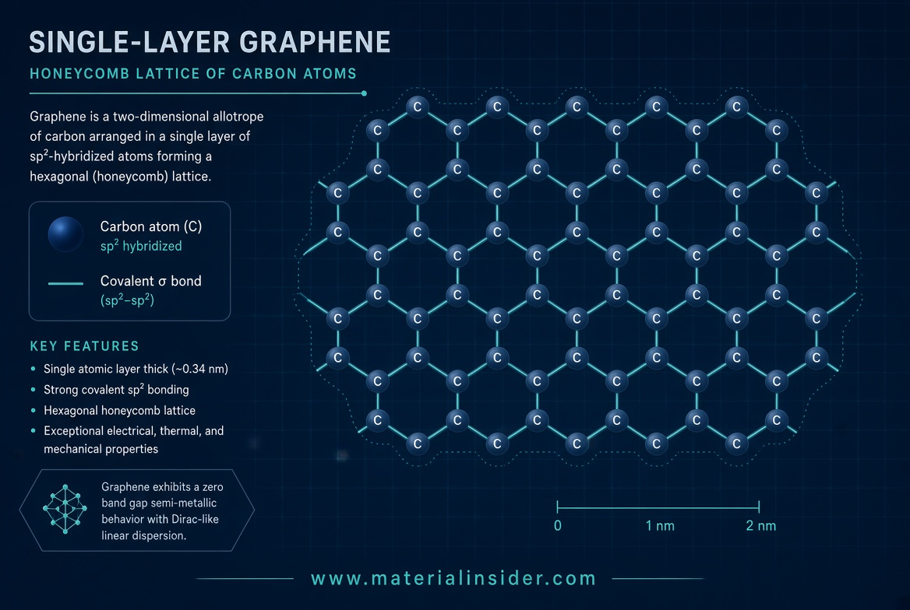
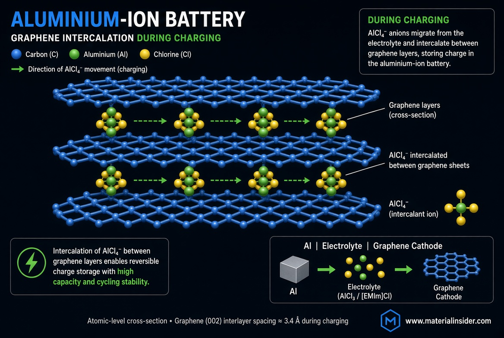
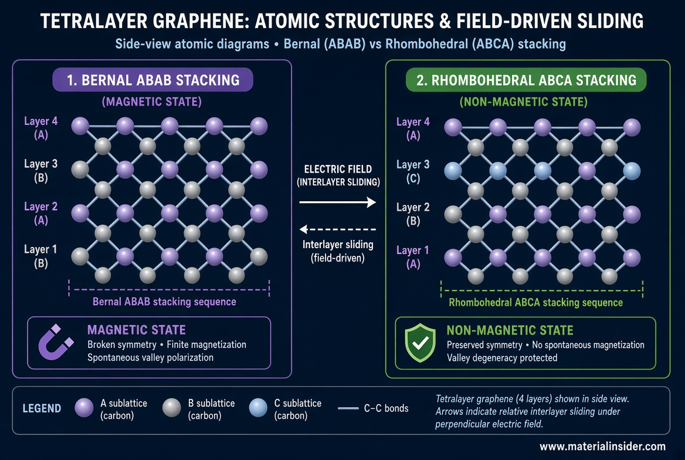
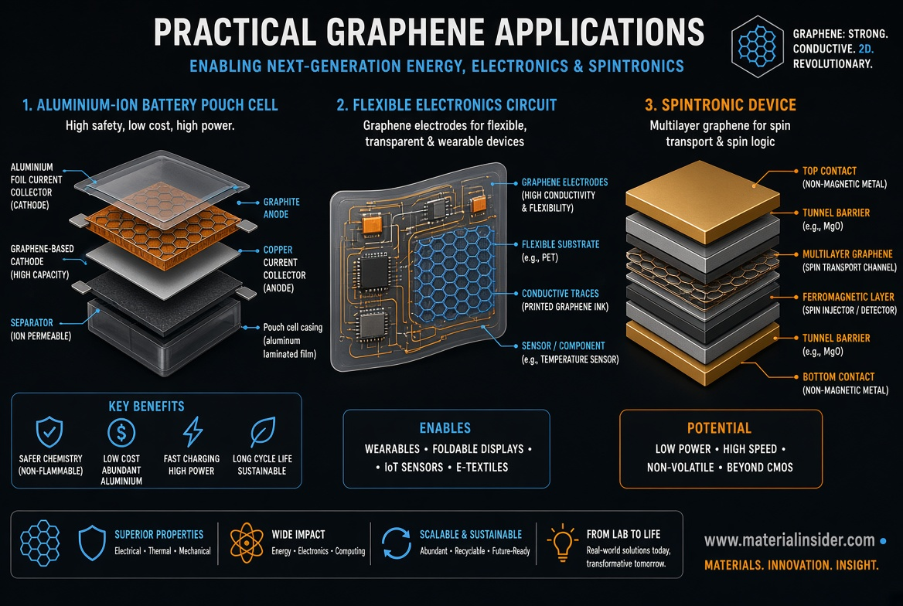
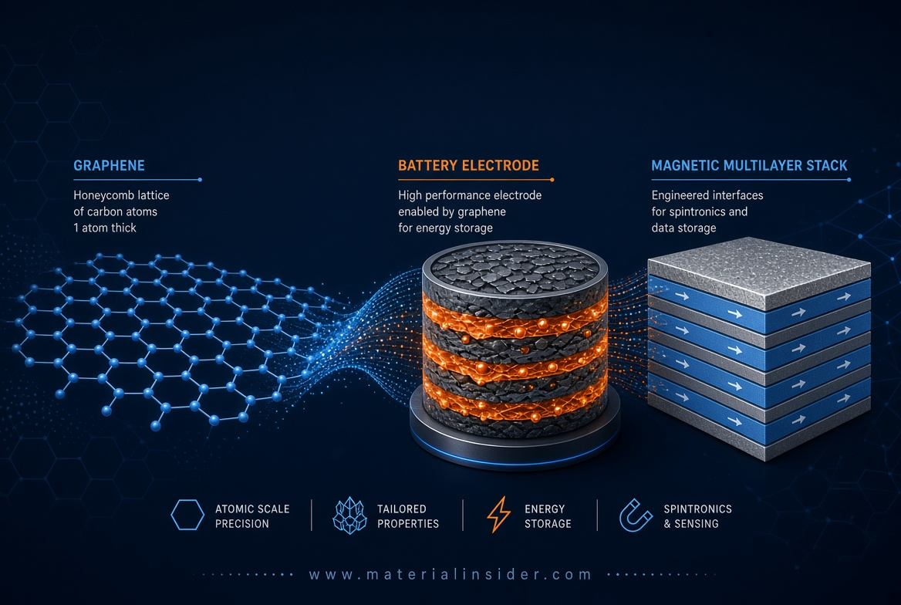

Graphene and 2D Materials: Ultra-Fast Aluminium-Ion Batteries and Electrically Switchable Magnetism
Graphene’s single-atom carbon lattice and stacked multilayer forms deliver record charging speeds in aluminium-ion cells and voltage-tunable magnetism. See the atomic mechanisms of ion intercalation and layer sliding that make these advances practical for batteries and electronics.
Graphene is a honeycomb lattice of carbon atoms one atom thick. When stacked or engineered into few-layer films, it combines extreme conductivity, mechanical strength, and tunable electronic states. Two recent peer-reviewed advances stand out: aluminium-ion batteries that charge in seconds using graphene cathodes, and electrically driven sliding of graphene layers that switches magnetism on and off without continuous power.

Graphene’s Atomic Advantage
Each carbon atom in graphene bonds to three neighbours via strong sp² hybrids, leaving a delocalised π-electron cloud that conducts electricity with near-zero resistance in the plane. In few-layer graphene the weak van der Waals forces between sheets allow ions or entire layers to move under modest external forces—exactly the behaviours exploited in the devices below.
Fast-Charging Graphene Aluminium-Ion Cells
In a typical aluminium-ion battery an aluminium anode oxidises while AlCl₄⁻ anions intercalate between graphene layers at the cathode. Because the graphene sheets are only a few atoms thick and highly conductive, the anions slide in and out rapidly with minimal structural damage.
Researchers using three-dimensional graphene networks or high-quality few-layer graphene films have reported specific capacities around 170–200 mAh g⁻¹ and charging rates exceeding 100 C (full charge in under a minute). One design reached 10⁴ C rates (full capacity in ~0.35 s) when liquid-metal interfaces lowered the anode energy barrier. Long-term cycling remains stable for thousands of cycles because the graphene lattice expands and contracts elastically rather than fracturing.

These cells are inherently safer than lithium-ion systems: the ionic-liquid electrolytes are non-flammable and aluminium is abundant. Commercial development is already under way with pouch cells demonstrating high energy efficiency under six-minute charge–discharge cycles.
Electrically Switchable Magnetism in Multilayer Graphene
In tetralayer graphene the stacking order can be switched between the common Bernal (ABAB) arrangement and the metastable rhombohedral (ABCA) arrangement. A gate voltage applies an out-of-plane electric field that drives interlayer sliding. The weaker van der Waals bonds allow the layers to shift by a fraction of a nanometre; once shifted, the new stacking remains stable even after the voltage is removed—non-volatile switching.
Only the rhombohedral configuration hosts a ferromagnetic state that produces an anomalous Hall effect. Transport measurements show clear bistable switching between non-magnetic (Bernal-dominant) and magnetic (mixed or rhombohedral) phases across a wide range of carrier densities. The magnetism is orbital in origin and can be toggled repeatedly by simply reversing the gate polarity.

This mechanism opens a route to reconfigurable spintronic devices and non-volatile magnetic memory written by pure electric fields.
Other Practical Advances
Graphene continues to improve conventional lithium-ion electrodes by coating cathodes to suppress transition-metal dissolution and by forming conductive scaffolds that accommodate volume changes. Few-layer graphene films also serve as high-rate cathodes in other multivalent systems and as transparent, flexible electrodes for flexible electronics. Layer-number control and clean interfaces remain active research frontiers, yet the material is already moving from laboratory to pilot production.

Looking Ahead
The same atomic features—π-electron conductivity and weak interlayer forces—underpin both ultra-fast ion transport and electrically driven structural phase transitions. As defect densities fall and scalable film-growth methods mature, graphene-based aluminium-ion cells and voltage-switchable magnetic multilayers are poised to complement, rather than replace, existing technologies in high-power storage and low-power spintronics.
Key Takeaways
- Graphene’s honeycomb lattice and weak interlayer bonds enable rapid AlCl₄⁻ intercalation for ultra-fast aluminium-ion batteries.
- Gate-voltage-driven sliding switches tetralayer graphene between Bernal and rhombohedral stacking, turning magnetism on and off non-volatily.
- Capacities of 170–200 mAh g⁻¹ and multi-thousand-cycle stability have been demonstrated in peer-reviewed cells.
- The same material improves lithium-ion electrodes and flexible electronics.
- Scalability and defect control remain the main engineering challenges.
References
- 1. Lin, M.-C. et al. An ultrafast rechargeable aluminium-ion battery. Nature 520, 324–328 (2015).
- 2. Chen, H. et al. A defect-free principle for advanced graphene cathode of aluminum-ion battery. Adv. Mater. 29, 1605958 (2017).
- 3. Huang, H. et al. Design and construction of few-layer graphene cathode for ultrafast and high-capacity aluminum-ion batteries. Energy Storage Mater. 27, 396–404 (2020).
- 4. Wang, D.-Y. et al. Ultra-fast charging in aluminum-ion batteries: electric double layers on active anode. Nat. Commun. 12, 820 (2021).
- 5. Brandon, D. et al. Gate-induced layer sliding drives non-volatile switching of magnetism in tetralayer graphene. Nat. Nanotechnol. (2026). https://doi.org/10.1038/s41565-026-02306-x
- 6. Related reviews on carbon cathodes and graphene in multivalent batteries: ACS Appl. Energy Mater. (2024–2025).

Cold Gas Thrusters: How Tesla’s Roadster Uses Compressed Air Instead of Fire
Cold gas thrusters use compressed inert gas to create thrust without combustion. See how Tesla demonstrated this technology on the next-generation Roadster and what happens at the molecular level.
Read Full Article →CCD Chips: Silicons That Turned Photons into Perfect Digital Eyes
CCD chips convert photons into electrons via the photoelectric effect in silicon, powering digital cameras, space telescopes, and X-ray detectors with near-perfect quantum efficiency and ultra-low noise.
Read Full Article →Share this article: